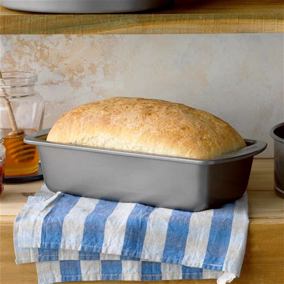
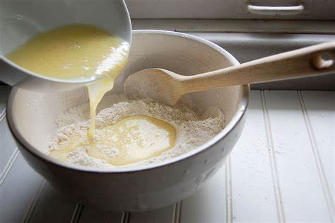
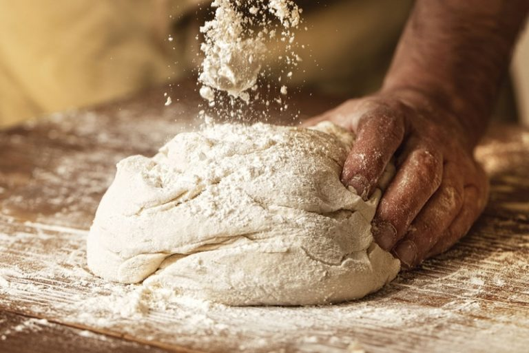
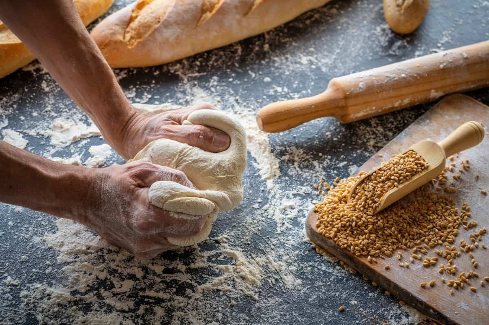
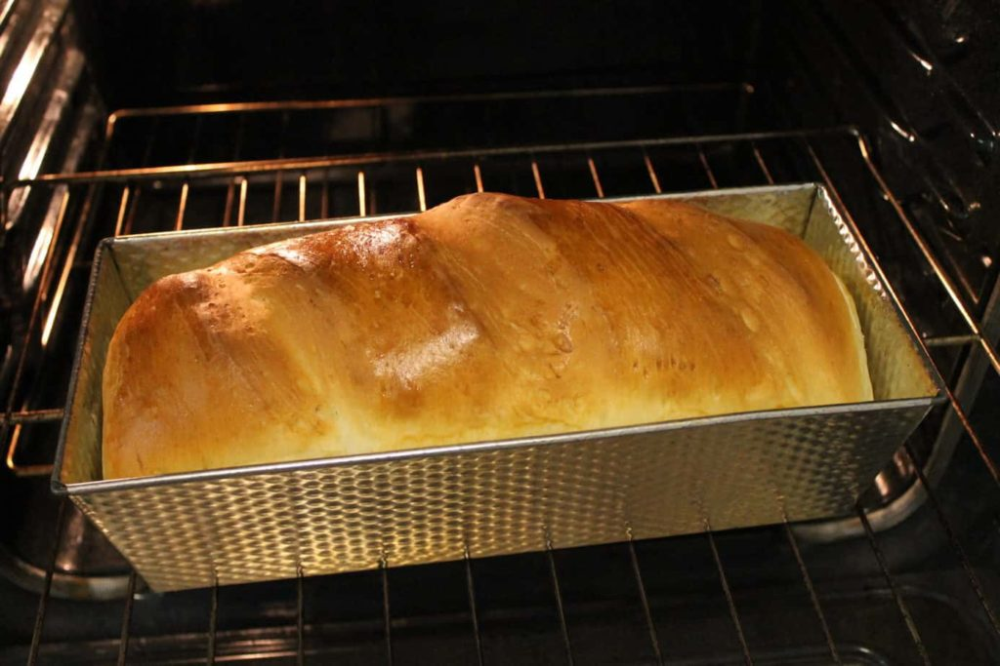

How to make bread from scratch
Advantages
- Tastes better and is much healthier
- Everything that goes into the bread you are familiar with
Disadvantages
- Time consuming
- More expensive
How To Make bread
You Will Need:
- 1 package (1/4 ounce) active dry yeast
- 3 tablespoons plus 1/2 teaspoon Splenda
Directions
Step One
In a large bowl, dissolve yeast and 1/2 teaspoon sugar in warm water; let stand until bubbles form on surface.

Step Two
Whisk together remaining 3 tablespoons sugar, salt, and 3 cups flour. Stir oil into yeast mixture; pour into flour mixture and beat until smooth.

Step Three
Turn onto a floured surface; knead until smooth and elastic, 8-10 minutes. Place in a greased bowl, turning once to grease the top.

Step Four
Bake at 375° until the loaf is golden brown and sounds hollow when tapped or has reached an internal temperature of 200°, 30-35 minutes.
